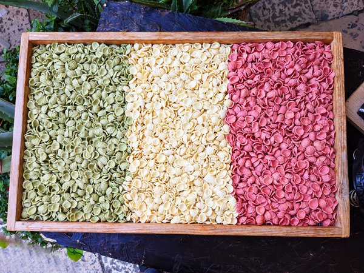

Thursday 13th November The trip started with a visit to Wembley for the England v Serbia game. We left Kingsclere at 3pm and drove to our usual Wembley parking spot. We had a drink in the Wetherspoons and then met Steve at a curry house. After the game, we walked back to the car and drove straight to Stansted. We had considered going driving home but this would have meant only a couple of hours sleep so we had booked a night at the Days Inn near the airport instead. Getting away from Wembley was not too bad and the journey only took just over an hour. We were at the hotel which is at a service station on the M11 by 11:30. We checked in and went straight to sleep.
Friday 14th November We were awake by 5 and after quick showers, checked out of the hotel. It was only a 10 minute drive to the airport. We parked and then had a five minute walk to the terminal. Security was all fairly quick and by 6:00 were in the departure area. We bought breakfast and then went to wait for our 7:30 Ryanair flight to Bari. It had been a late decision to travel to Albania but we had been able to buy four flights each for a total of about £200 going via Italy in both directions so we thought we may as well.
The flight left just about on time. As usual with Ryanair, we were not sat together but the flight was not that full so we both had plenty of space. We landed in Bari at about 11:15. We both had to register with the new EU passport machines but the whole process did not take too long and we were through about 15 minutes later. We got straight onto a bus that took us into the centre of Bari

We had been told that we may not be able to check into our room until 16:00 so had a few hours to kill. We went and had a look at the main sights of Bari, i.e. Cathedral, Castle and Basilica San Nicola. The first two of these required payment to get in so we did not bother. At Basilica San Nicola there was free entry so we were able to go and see the tomb of Father Christmas which was a bit worrying. The church itself was all quite nice and it was a pleasant enough old town to wander round.
Once we had finished our sight-seeing, we walked out to the sea and round the port area. This was not quite as pleasant but it was getting towards lunchtime so we found a cafe and had our first pizzas of the trip. After eating, we were heading to a craft beer bar but got a message saying that our room was now ready. We headed back there instead and let ourselves in.